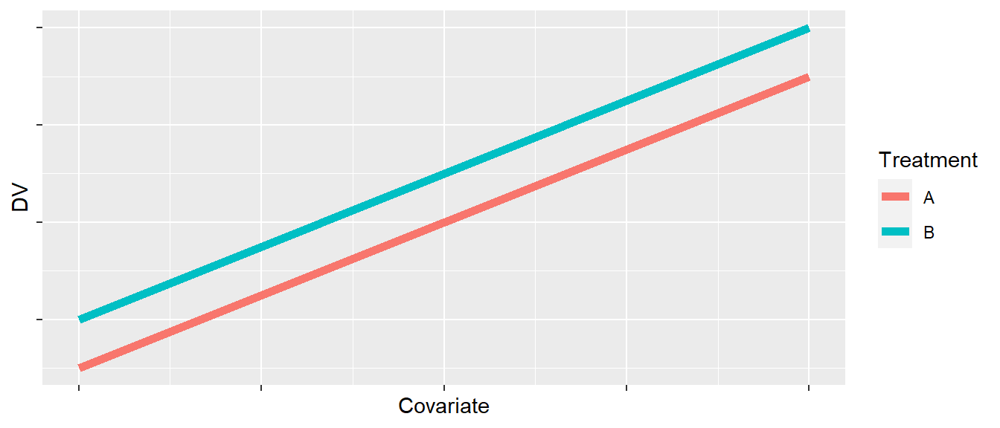
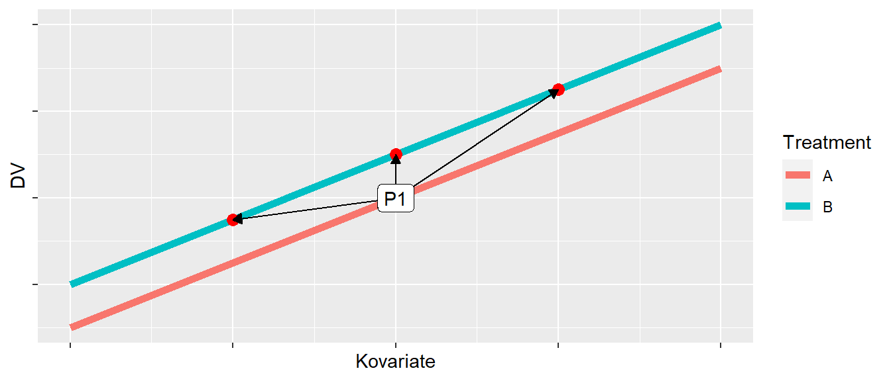
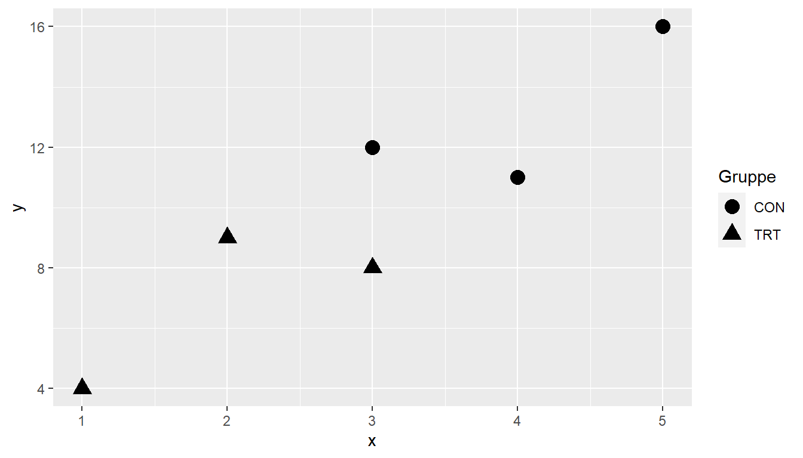
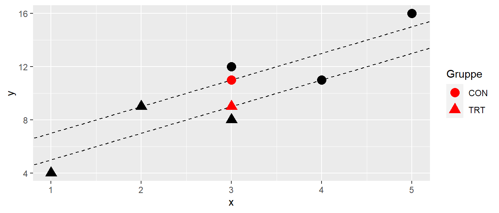

24 ANCOVA
In den vorhergehenden Kapiteln zu CRD bzw. CRFD haben wir uns angeschaut, wie wir den Einfluss einer oder mehrer nominaler unabhängiger Variablen auf eine abhängige Variable modellieren können. In diesem Zusammenhang habe wir uns auch mit der Varianzzerlegung auseinandergesetzt und immer wieder gesehen, dass diese Zerlegung auch als der Vergleich von verschiedenen Modellen miteinander betrachtete werden kann.
24.1 Problem
24.2 Nuisance factor, concomitant variables, covariate
24.3 Terminologie
- commensurate covariates
- Variablen auf der gleichen Skala wie die DV
- Unterscheidung zwischen
- Kovariate für das Untersuchungsdesign
- Kovariate für die Analyse der Daten
Wie würden sich die Gruppen unterscheiden, wenn sie die gleichen Werte in der Kovariate hätten?
24.4 Probleme

24.5 Modell
24.5.1 Parallel line model
\[ Y_{it} = \mu + \tau_i + \beta x_{it} + \epsilon_{it} \quad \epsilon_{it} \sim \mathcal{N}(0,\sigma^2) \]
24.5.2 Centered model
\[ Y_{it} = \mu^* + \tau_i + \beta (x_{it} - \bar{x}_{..}) + \epsilon_{it} \]
24.6 Voraussetzungen
- Experimental units sind randomisiert in die Gruppen eingeteilt worden
- Varianz \(\sigma^2\) ist konstant über Gruppen und Werte der Kovariate
- Die Kovariate und das Treatment sind statistisch unabhängig voneinander
24.7 Beispiel1
| ID | Gruppe | X | Y |
|---|---|---|---|
| S1 | TRT | 1 | 4 |
| S2 | TRT | 2 | 9 |
| S3 | TRT | 3 | 8 |
| S4 | CON | 3 | 12 |
| S5 | CON | 4 | 11 |
| S6 | CON | 5 | 16 |
24.8 Modellvergleich
24.8.1 Volles Modell
\[ y_{ij} = \mu + \tau_{j} + \beta X_{ij} + \epsilon_{ij} \]
24.8.2 Reduziertes Modell
\[ y_{ij} = \mu + \beta X_{ij} + \epsilon_{ij} \]
24.9 Berechnung und statistischer Test
mod_0 <- lm(y ~ x, bw)
mod_1 <- lm(y ~ x + group, bw)
anova(mod_0, mod_1)| term | df.residual | rss | df | sumsq | statistic | p.value |
|---|---|---|---|---|---|---|
| y ~ x | 4 | 14.4 | ||||
| y ~ x + group | 3 | 12.0 | 1 | 2.4 | 0.6 | 0.495 |
24.10 Oder auch mit aov()
mod_aov <- aov(y ~ x + group, bw)
summary(mod_aov)| term | df | sumsq | meansq | statistic | p.value |
|---|---|---|---|---|---|
| x | 1 | 67.6 | 67.6 | 16.9 | 0.026 |
| group | 1 | 2.4 | 2.4 | 0.6 | 0.495 |
| Residuals | 3 | 12.0 | 4.0 |
24.11 Aber…???
mod_aov <- aov(y ~ group, bw)
summary(mod_aov)| term | df | sumsq | meansq | statistic | p.value |
|---|---|---|---|---|---|
| group | 1 | 54 | 54 | 7.7143 | 0.0499 |
| Residuals | 4 | 28 | 7 |
24.12 Grafik


24.13 Adjusted means \(\bar{Y}_l'\)
\[ E[\bar{Y}_{i.}] = \mu + \tau_i + \beta\bar{x}_{..}) \]
x_new <- tibble(x = mean(bw$x), group=c('TRT','CON'))
y_bar_j <- predict(mod_1, newdata = x_new)
y_bar_j 1 2
9 11 24.14 Adjusted means im Beispiel
24.15 … oder Adjusted means mit emmeans()
y_bar_j2 <- emmeans::emmeans(mod_1, ~group)
y_bar_j2 group emmean SE df lower.CL upper.CL
CON 11 1.53 3 6.14 15.9
TRT 9 1.53 3 4.14 13.9
Confidence level used: 0.95 24.16 Beispiele für Effektrelationen

24.17 Effect size \(\omega^2\)
24.17.1 overall
\[ \hat{\omega}^2=\frac{df_{\text{effect}}(MS_{\text{effect}}-MS_{\text{error}})}{SS_{\text{total}}+MS_{\text{error}}} \]
24.17.2 Im Beispiel
\[ \hat{\omega}^2 = \frac{1(2.4 - 4)}{82 + 4} = -0.02 \]
24.18 Effect size \(\omega^2\)
effectsize::omega_squared(mod_1, partial=F)# Effect Size for ANOVA (Type I)
Parameter | Omega2 | 95% CI
---------------------------------
x | 0.74 | [0.00, 1.00]
group | 0.00 | [0.00, 1.00]
- One-sided CIs: upper bound fixed at [1.00].24.19 standardized differences between means
\[ \hat{d} = \frac{\bar{Y}_l' - \bar{Y}_m'}{\sqrt{MS_W}} \]
mod_r <- lm(y ~ group, bw)
emmeans::eff_size(y_bar_j2, sigma = sigma(mod_r), edf = df.residual(mod_r)) contrast effect.size SE df lower.CL upper.CL
CON - TRT 0.756 1.01 3 -2.46 3.98
sigma used for effect sizes: 2.646
Confidence level used: 0.95 \(MS_W\) = Error in ANOVA-Model: y ~ g or \((SS_g + SS_{\text{error}})/(df_g + df_{\text{error}})\) from ANCOVA-Model.
24.20 sample size estimate
\[\begin{align*} \sigma_{\epsilon(\text{ANCOVA})}^2 &= \sigma_{\epsilon(\text{CRD})}^2(1-\rho_{xy}^2) \\ f_{\text{ANCOVA}} &= \frac{\sigma_{\text{btw}}}{\sigma_{\epsilon(\text{CRD})}}\frac{1}{\sqrt{1-\rho_{xy}^2}} = \frac{f_{\text{CRD}}}{\sqrt{1-\rho_{xy}^2}} \end{align*}\]
\(df_{\text{Residual}} = N - k - 1\) under the ANCOVA model
24.21 sample size Beispiel3
In einer CRD-Studie wurde eine Effektstärke für den Unterschied zwischen drei Gruppen (\(k = 3\)) von \(f = 0.41\) gefunden. Wie verändert sich die notwendige Stichprobengröße wenn eine Kovariate mit \(\rho = 0.5\) mit der abhängigen Variable hinzugenommen wird?
24.22 sample size example
Bei einer power von \(0.8\) wird eine Stichprobengröße von:
pwr::pwr.anova.test(k=3, f=0.41, sig.level=0.05, power=0.8)$n[1] 20.13803Wenn die Kovariate modelliert wird, erhöht sich die Effektstärke auf \(f = 0.41/\sqrt{1-0.5^2} = 0.47\). Daraus resultiert eine reduzierte Stichprobengröße von:
pwr::pwr.anova.test(k=2, f=0.47, sig.level=0.05, power=0.8)$n[1] 18.7761824.23 Was passiert wenn die Kovariate interagiert

24.24 Modell
\[ y_{it} = \beta_0 + \tau_i + \beta \cdot x_{it} + (\tau\beta)_{it}x_{it} + \epsilon_{it} \]
24.25 Welcher Unterschied zwischen den Gruppen?

24.26 Modellfit - Interaktionsmodell
mod <- aov(y ~ x*gruppe, df_i)
anova(mod)| Term | df | SSQ | MSQ | F | p.value |
|---|---|---|---|---|---|
| x | 1 | 1321.60 | 1321.60 | 1847.21 | 0 |
| gruppe | 2 | 151.11 | 75.56 | 105.61 | 0 |
| x:gruppe | 2 | 78.76 | 39.38 | 55.04 | 0 |
| Residuals | 54 | 38.63 | 0.72 |
24.27 Mehrfachvergleiche - EMS Mittelwerte
mod_ems <- emmeans(mod, ~gruppe|x, at=list(x=c(-2,0,2)))
mod_emsx = -2:
gruppe emmean SE df lower.CL upper.CL
A -3.286 0.373 54 -4.033 -2.54
B -3.101 0.335 54 -3.773 -2.43
C -2.725 0.256 54 -3.238 -2.21
x = 0:
gruppe emmean SE df lower.CL upper.CL
A 0.934 0.208 54 0.517 1.35
B 2.958 0.185 54 2.587 3.33
C 5.303 0.201 54 4.900 5.71
x = 2:
gruppe emmean SE df lower.CL upper.CL
A 5.155 0.315 54 4.524 5.79
B 9.016 0.248 54 8.519 9.51
C 13.331 0.361 54 12.607 14.05
Confidence level used: 0.95 24.28 Mehrfachvergleiche - Paarweise Vergleiche
pairs(mod_ems)| x | contrast | estimate | \(s_e\) | \(df\) | t | p |
|---|---|---|---|---|---|---|
| -2 | A - B | -0.18 | 0.50 | 54 | -0.37 | 0.93 |
| -2 | A - C | -0.56 | 0.45 | 54 | -1.24 | 0.43 |
| -2 | B - C | -0.38 | 0.42 | 54 | -0.89 | 0.65 |
| 0 | A - B | -2.02 | 0.28 | 54 | -7.26 | 0.00 |
| 0 | A - C | -4.37 | 0.29 | 54 | -15.10 | 0.00 |
| 0 | B - C | -2.35 | 0.27 | 54 | -8.59 | 0.00 |
| 2 | A - B | -3.86 | 0.40 | 54 | -9.64 | 0.00 |
| 2 | A - C | -8.18 | 0.48 | 54 | -17.07 | 0.00 |
| 2 | B - C | -4.31 | 0.44 | 54 | -9.85 | 0.00 |
24.29 Beispiel aus (Maxwell, Delaney, und Kelley 2004, p.429)

24.30 Analyse
mod_bdi <- lm(Post ~ Pre + Condition, bdi_w)
anova(mod_bdi) |> broom::tidy() |>
kable(booktabs = T, digits = 3)| term | df | sumsq | meansq | statistic | p.value |
|---|---|---|---|---|---|
| Pre | 1 | 336.682 | 336.682 | 11.574 | 0.002 |
| Condition | 2 | 217.149 | 108.575 | 3.732 | 0.038 |
| Residuals | 26 | 756.335 | 29.090 |
24.31 Gruppenvergleiche
bdi_em <- emmeans(mod_bdi, ~Condition)
pairs(bdi_em, infer=T) contrast estimate SE df lower.CL upper.CL t.ratio p.value
SSRI - Placebo -4.45 2.42 26 -10.45 1.555 -1.841 0.1763
SSRI - Wait list -6.44 2.41 26 -12.44 -0.445 -2.669 0.0334
Placebo - Wait list -1.99 2.41 26 -7.99 4.002 -0.826 0.6904
Confidence level used: 0.95
Conf-level adjustment: tukey method for comparing a family of 3 estimates
P value adjustment: tukey method for comparing a family of 3 estimates 24.32 Zum Nachlesen
24.32.1 Allgemein
24.32.2 Pre-post ANCOVA
(wan2021?)
24.32.3 Regression to the mean
Shephard (2003), (barnett2005?), (nevill2004?)